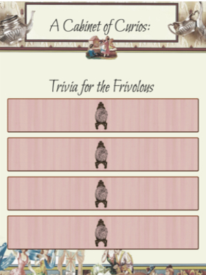

Tech Experience
Technical Architect Delivery Associate Manager
Technical Delivery Lead for Accenture "diamond client" Sempra Utilities (SoCal Gas & SDGE) in a cloud migration initiative that involved moving 65% of their apps to the cloud. I am in charge of connecting the Offshore (Philippines) Engineering Team with Accenture and client teams onshore in the US. The scope of my work includes everything from technical architecture, application bugfixes, troubleshooting Infrastructure as Code pipelines, project management, requirements gathering, disaster recovery solutioning, data migration, functional testing, maintaining project management boards, and constant client engagement. Migrated 22 applications from the Azure Pack platform to the AWS Cloud and also served as dev lead (onshore) in building a greenfield large-scale CMS application. This React application with NodeJS backend was deployed with Serverless Cloud Native tooling via Terraform pipelines.
Software Engineer
As a Software Engineer at Vivoom, I was primarily a Frontend UX/UI Developer working in Node
using the Angularjs Framework, with SQL and MongoDB on the backend, creating mobile responsive web apps.
Among our many capabilities (including analytics, attribution, curation, moderation, webhooks and other
integrations,) I was largely focused on building components within a complex self-serve CMS, and customizing
our specific Consumer Experience apps, according to client needs.
Builds were done with Grunt, Git, Maven and Docker, and deployed with AWS. Templatized the customizable
Consumer Experience apps, and built automated publishing capabilities through the client-facing CMS.
Teaching Assistant | Tutor | Recruiter
Instructional team member, tutor & technical recruiter, helping Trilogy bring fullstack web development and data visualization certificate programs to top universities in North America, including Georgia Tech, UC Berkeley, University of Toronto and U Penn. Teaching Javascript, SQL, HTML, CSS, JQuery, Mongo, Node, Express, Sequelize, Git, Handlebars and React concepts to students from all over the country. Recruiting duties include role-plays and live-coded tech 'final' interviews. I still tutor and mentor students part-time.
Student Success Manager
Trilogy Education Services is a Continuing Education Program Manager (CEPM) whose mission is to empower universities to transform the lives of students by preparing them for high-growth careers in the Digital Economy.
- After working as Coding TA and Tutor at Rutgers Coding Bootcamp, I became its Program Manager of Student Success, for anywhere between 9 to 11 active cohorts, on 2 separate campuses
- Ensured successful completion of the course and meeting of all graduation metrics for each student in an intensive technical training program, both Full and Part time, lasting anywhere from 3 to 6 months
- Delivered cutting-edge instruction to over 330 enrollments in the continuing education division of Rutgers University,with coursework powered by Trilogy Education
- Hosted and organized online tech panel events and delivered graduation and inaugural day speeches
- Managed enrollment records, conducted outreach with industry professionals and employer partners
- Maintained student and KPI records, monitored pipeline and reporting through Salesforce and Sisence
- Implemented and encouraged adoption for ongoing process changes in an extremely high growth and fast-paced Ed Tech company, while overseeing and coaching 36 members of instructional staff that reported directly to me
Audiobook Producer | Narrator | Sound Engineer
Delivered retail-ready digital content to the audiobook marketplace through iTunes, Amazon and Audible.com. Produced, narrated and sound-engineered audiobooks, putting them through vigorous QA before delivering, by FTP, to the client. Sometimes in-studio narrator at Audible's Newark offices, and at times a self-producer, recording in my own StudioBricks home studio.
Technical Writer | Translator
Translated Medical Case studies from Turkish to my native English, preparing them for publication in US medical journals. Integrating one of the most common use-cases for machine learning: translation CAT tools.
PROJECTS
Vivoom - built SPA components in Angularjs for Advertising SaaS Platform's Self-Serve CMS, giving brands publishing capability
Significant changes made to UX/UI of the company client-facing CMS, using Angularjs and creating consumer experience templating capability at build time, using Grunt.js
Consumer Experiences were "app-less apps" that allowed the brand's consumers to create "User Generated Content" in the form of video testimonials and images.
Templates Personally Designed for Consumer Experiences
OTHER PROJECTS
Train Time Scheduler
Using Timers and Firebase, this Javascript and JQuery-enabled scheduler allows you to dynamically add new trains and generate new rows to a table. It accurately predicts train times based on intervals.

Search App: Find Junior Devs
Connecting employers with top junior dev talent with a handy tool that searches by techstack alone. MySQL backend, using Handlebars, Express, Node and JQuery.

Number Guessing Game
A Javascript game using JQuery and the music of the Cocteau Twins.
Trivia Game
A Victorian themed game, using JQuery, Javascript Timers and JSON; dynamically generating questions and calculating ratings based on answers given.
React Sugar Calculator
Uses React to search the Nutritionix API for sugar values of nearly any type of food, calculates what that intake would cost (or gain) you over time. A sugar-shamer.
Education
Rutgers University
The New School/Parsons
Rutgers Coding Bootcamp
Certifications and Honors
- AWS Certified Developer Associate, 2019
- AWS Certified Solutions Architect Associate, 2021
- Certificate in Fullstack Web Development Rutgers University Coding Bootcamp, 2017
- SAG/AFTRA Audiobook Narrator and Voice Artist
- District Leader, Montville Township Committeeperson, 2017
Skills & Languages
HTML | CSS | JAVASCRIPT | NODE | AWS | JQUERY | EXPRESS | ANGULAR | FIREBASE | SQL | REACT | MONGOdB
ENGLISH (native) | TURKISH (Fluent, non-native) | GERMAN (conversational) | SPANISH, ITALIAN, FRENCH, DANISH (Touristic)
Writing Samples and Translation
Interests
Though I'd been a programming hobbyist since high school, my interest in coding gained traction when I became an Audiobook Producer, and was curious about what happens "under the hood" with Digital Audio Workspace software. In my home studio, I still occasionally record and edit shortform voice-overs, having voiced many TV, film, video, radio and commercial projects. I've leant my communication skills to management consulting teams, helping businesses train C-level executives, for companies that include Microsoft, Barclays, and Aetna.